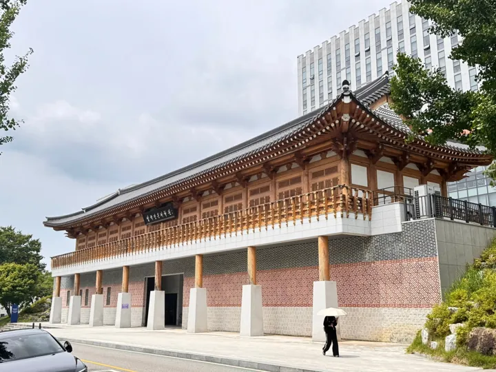

About
사무소 소개
1992년 개소 이래 사업성 검토에서 단지계획, 실시설계까지 관공서·민간사업 전반의 업무를 수행해 왔습니다. 새로운 시대의 사고와 기술력을 갖추어, 오늘이 아닌 내일을 위한 건축사사무소가 되고자 합니다.

사무소 개요
- 명칭
- (주)율(律)그룹건축사사무소
- 개설
- 1992년 10월
- 등록건축사
- 강문수 (제5102호) · 김희순 (제4245호)
- 주소
- 전북 전주시 완산구 홍산남로 82, 402호
- 전화 / 팩스
- 063-226-2121 / 063-226-2125
- 이메일
- yularc1@daum.net
가입 단체 — 대한건축사협회 · 대한건축학회 · 한국건축가협회 · 한국건설기술인협회 · 한국여성건축가협회
주요 업무
- 건축계획
- 건축설계 및 감리
- 건설사업관리
- 종합배치계획
- 단지계획
- 도시설계
- 사업성 검토 및 자문
- 건축물 관리점검
- 연구개발
대표이사 소개
강문수
대표이사 · 건축사 (제5102호)
- (現) 전주시 건축위원회 위원
- LH공사 전북본부 매입심의위원회 위원
- 전북대학교 건축공학과 총동문회장
- 전주시 정책 자문위원 · 도시분쟁조정위원회 위원
김희순
대표이사 · 건축사 (제4245호)
- 전주시 경관위원회 위원
- (現) 익산시 공공건축심의위원회 위원
- 전북여성건축가회 명예회장
- 전라북도 공공건축가 · 전주시 공공건축가